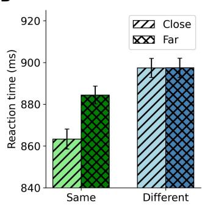
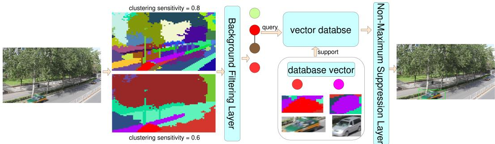
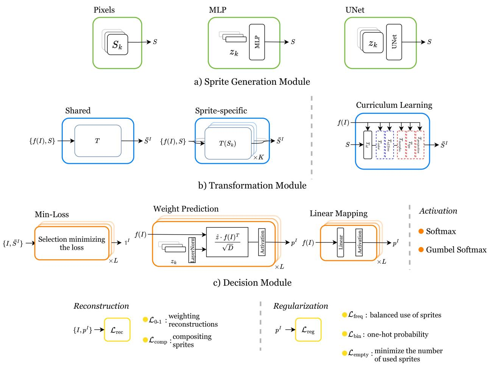
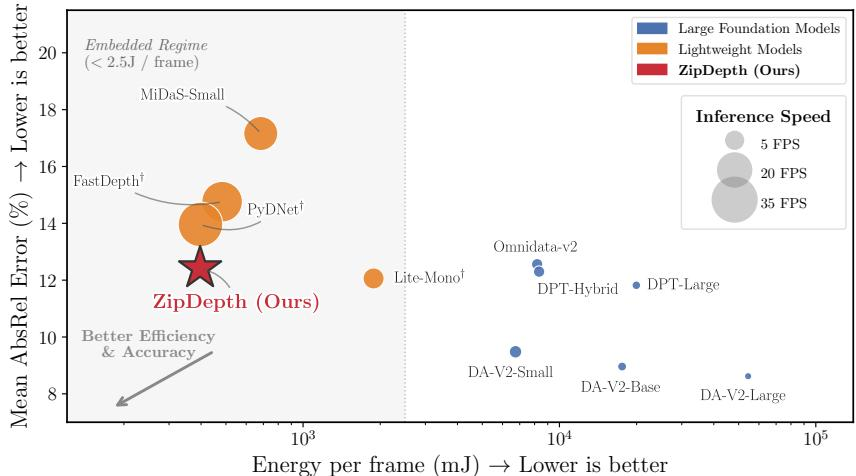
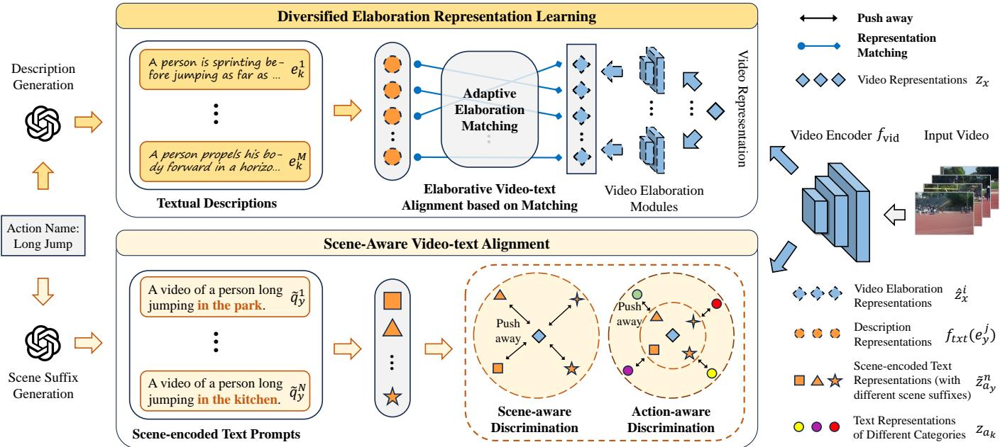

7 月 12 日：Human-like Object Grouping in Self-supervised 等视觉表征论文归档
本页按日期归档近期论文，保留优先级、主题、来源与方法线索，方便回看同一批工作的研究脉络。
先读 Human-like Object Grouping in Self-supervised。DINO/self-supervised ViT 的 object-centric patch similarity 能预测人类 object grouping 行为，是今天最贴近通用视觉 SSL 表征机制的复核项。 其余论文按 P1/P2 与主题顺序扫读，重点看方法图、消融设置和是否能迁移到通用视觉表征。
论文索引

Human-like Object Grouping in Self-supervised Vision Transformers
高相关；详见方法、贡献和实验边界。
方法：DINO/self-supervised ViT 的 object-centric patch similarity 能预测人类 object grouping 行为，是今天最贴近通用视觉 SSL 表征机制的复核项

Dive Into the Implicit Biases of Low-rank Vision-language Alignment
中高相关；详见方法、贡献和实验边界。
方法：低秩 alignment 被用于解释视觉 token 线性可分性如何在 VLM 对齐中保真

VocaDet: Sample-Driven Open-Vocabulary Object Detection and Segmentation via Visual Tokenization and Vector Database Retrieval
中相关；详见方法、贡献和实验边界。
方法：用 DINOv3 特征聚类成 visual vocabulary，适合作为“冻结表征 + 可扩展记忆”的工程参考

Deep Sprite-based Image Models: An Analysis
中相关；详见方法、贡献和实验边界。
方法：分析 sprite-based decomposition 并提出可扩展 object-centric 无监督分解，和通用视觉表征可解释性相关

ZipDepth: Bringing Lightweight Zero-Shot Monocular Depth Anywhere, on Any Device
中相关；详见方法、贡献和实验边界。
方法：不是 SSL 主方法，但把大 VFM depth 能力蒸馏到 6.1M 参数模型，适合关注表征压缩与迁移的人扫读

XOV-Action: Towards Generalizable Open-Vocabulary Action Recognition
中低相关；详见方法、贡献和实验边界。
方法：旧文状态更新为 TPAMI，关注图文基础模型迁移到跨域视频动作识别的人可扫